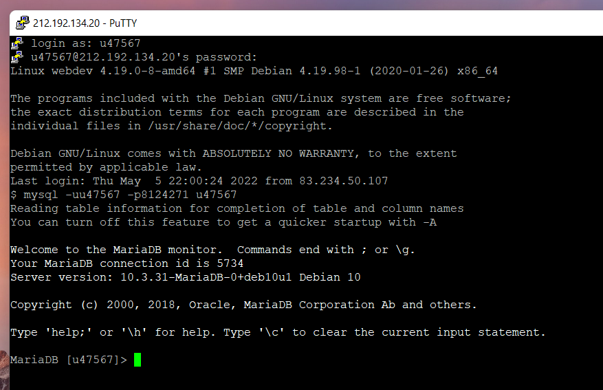
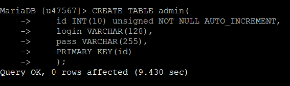
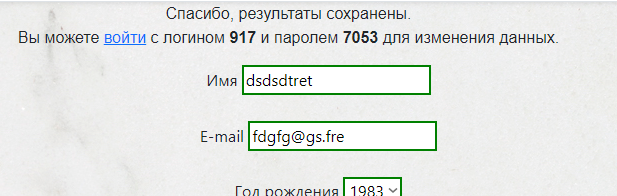
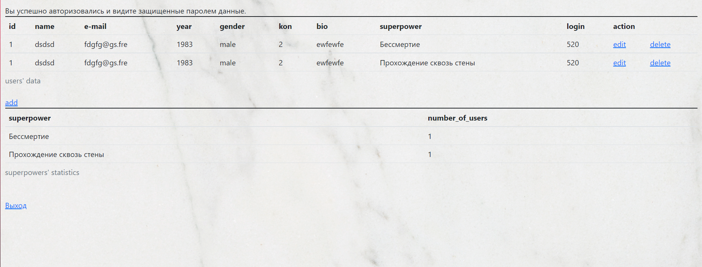
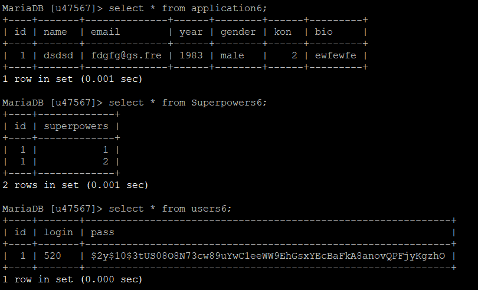
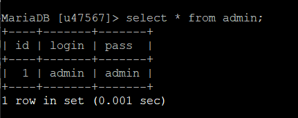

Подключение к базе данных.

Создание таблицы admin, хранящей информацию об учетных записях администраторов.
PHP хранит логин и пароль в суперглобальном массиве $_SERVER.

Войти можно либо как обычный пользователь(логин и пароль юзер получает после отправки формы),
либо как администратор(для админа сущестуют отдельные логин и пароль).

Пример интерфейса управление администратора, который позволяет редактировать
и удалять данные других пользователей.
Для входа под именем администратора используется логин admin и пароль admin.

Содержимое таблиц после отправки форм.

